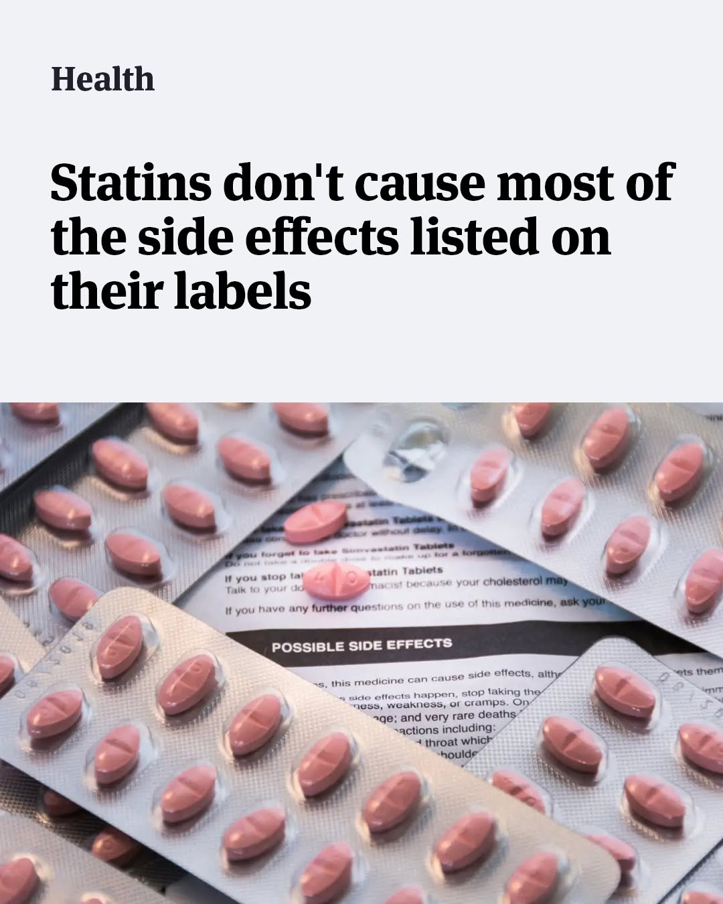

Merck's oral PCSK9 pill Lipfendra approved by FDA, cut LDL 56-60% in Phase 3
Reports FDA approval of Merck's Lipfendra, a once-daily pill delivering PCSK9-inhibitor-type LDL lowering. Phase 3 trials showed LDL reductions of 56% to 60%.
111 posts
Reports FDA approval of Merck's Lipfendra, a once-daily pill delivering PCSK9-inhibitor-type LDL lowering. Phase 3 trials showed LDL reductions of 56% to 60%.
Louis quotes a report on a trial that separated dietary cholesterol from saturated fat. High-cholesterol eggs within a low saturated fat diet did not raise LDL; saturated fat was the driver.
A small study of 33 patients, mostly intolerant of other lipid drugs, found that dosing ezetimibe only three times a week still lowered LDL substantially, consistent with its 22-hour half-life. Most patients tolerated it.
Gokhan argues media coverage misrepresented KETO-CTA: it compared keto dieters with LDL around 200 to those around 300, with no low-LDL control, and still showed substantial new plaque, progressing like high-risk conditions. He says he would not keto as a lean mass hyper-responder and controls his own LDL with low-dose rosuvastatin.

A post explaining that U-shaped hazard curves in observational data appear for cholesterol, BMI, A1C and blood pressure alike, and are explained by reverse causality rather than benefit of high values. Illness lowers LDL, BMI, A1C or blood pressure, creating false appearances of protection.

Argues that the benefit of LDL lowering depends on both how much and how long LDL is reduced. The author, one of the group's admins, is betting on very low-dose statins to hold LDL at 70-100 mg/dL, and estimates about 60% lifetime risk reduction from a 70-point lowering sustained for 30 years. The post also cites Charles Grashow as a case of CAC regression.
Louis explains that the FDA forced US red yeast rice products to remove lovastatin (monacolin K), the first statin, approved in 1986 as Mevacor, yet they still lower cholesterol through related monacolins. Some people intolerant of statins tolerate it, but it is unregulated with variable potency and lacks large long-running RCTs proving fewer heart attacks and strokes, so it is a gamble for high-risk people.
Louis links the full Lancet paper and quotes the summary: pooled data from 23 CTT randomized trials found similar reports of nearly all label-listed side effects in statin and placebo groups, so noticed symptoms are mostly not caused by the drug.

Louis shares a NutritionFacts summary that daily black cumin improved cholesterol, triglycerides, blood pressure and blood sugar across meta-analyses of RCTs. In one trial, postmenopausal women taking 1 g/day lowered LDL by 27% in two months, which rebounded after stopping.
A quick reference on ezetimibe: it blocks cholesterol absorption in the small intestine and is most useful added to a statin. It also modestly lowers apoB and triglycerides and slightly raises HDL.

An overview of residual-risk drivers beyond cholesterol, blood pressure, diabetes and smoking: gum disease, chronic immune activation, clonal hematopoiesis, gut microbiome metabolites and pollutants. The common thread is chronic inflammation and oxidative stress.
A table of contents linking the group's most useful posts: find a good cardiologist, whether low cholesterol is harmful, when and how much to lower LDL, factors beyond LDL-C, target cholesterol levels, risk calculators, early versus delayed treatment and expected benefits of lifestyle. Mostly links back to other group posts.

Summarises the 2025 ACC Scientific Statement (JACC) concluding the inflammation-ASCVD link is now clinically actionable. It recommends universal hsCRP screening in primary and secondary prevention alongside cholesterol, notes IL-6 and fibrinogen also predict risk, and says CT perivascular fat attenuation is promising but not routine. It contrasts this with a more cautious 2002 CDC/AHA workshop.
Long article arguing skepticism about statins is no longer warranted. About 16 FDA-approved drugs lower LDL, nearly every method of lowering LDL reduces cardiovascular events, and high-dose statins combined with other agents can slow or possibly halt plaque progression. Diet changes such as reducing saturated fat also lower LDL.

Louis explains why observational studies show higher mortality at both low and high LDL or total cholesterol: the same U-curves appear for BMI, A1C and blood pressure, and illnesses like cancer lower these values. RCTs and Mendelian randomization show lower LDL causes lower mortality, so high LDL does not protect.
Summarises a University of Pennsylvania preclinical study adapting CAR T therapy: Tregs engineered to recognise oxidized LDL dampened arterial inflammation and reduced plaque 70% in cholesterol-prone mice. Unlike cancer CAR-T, the cells suppress rather than destroy; it is a possible add-on for patients at risk despite cholesterol drugs.
Summarises Dr Stanfield's video on a Mendelian randomization study of over a million people. Short RCTs show no cognitive harm or benefit and observational studies suggest protection; genetic variants mimicking lifelong statin and ezetimibe action were linked to 76-82% relative dementia risk reduction, implying long-term benefit missed by short trials. The video also notes treating hearing loss, vision loss and midlife depression.
Louis compiles meta-analyses of randomized trials showing statins neither raise nor lower cancer incidence or mortality, plus cohort studies suggesting neutral or lower cancer risk, e.g. prostate cancer. He adds that RCTs and prospective cohorts sit at the top of the evidence hierarchy.

Louis notes the University of Bonn oatmeal trial keeps attracting attention. The shared summary: adults with metabolic syndrome eating about 300 g/day of oatmeal for two days saw about 10% lower LDL than a calorie-restricted control.
Louis explains that the blood holds only a small fraction of the body's cholesterol and that tissues, including the brain, mostly synthesize what they need. The steroid hormone demand supplied by blood is only tens of milligrams a day, easily met at very low LDL-C. He cites FOURIER and ODYSSEY OUTCOMES, in which LDL-C below 15-20 mg/dL did not impair adrenal or gonadal hormone production or vitamin D.

The author, who uses keto for 3-12 months at a time, lists potential benefits of a ketogenic diet, such as anti-inflammatory effects of ketones (BHB) and possible anti-cancer effects, with a longer blog post. It acknowledges he cannot do keto all the time and alternates with Mediterranean eating.
Comparison of the two high-intensity statins: both lower LDL-C by 50% or more, rosuvastatin is more potent per milligram, but in the randomized LODESTAR trial 3-year clinical outcomes did not differ significantly. The goal is reaching the appropriate LDL target on maximally tolerated therapy.
Summary of a debate video. Libby argues substantial residual inflammatory risk remains even with well-controlled LDL, with interleukin-6 causal in atherosclerosis. Raal argues LDL is the primary causal factor and inflammation a consequence.

Louis shares an overview of nattokinase, a fibrinolytic enzyme in natto, noting the existing human studies are small and lower quality.

A long essay argues that chronic hidden infections may help drive plaque growth and rupture. It highlights a 2025 JAHA study finding viridans-group oral streptococci in roughly 42% of coronary plaque samples, reinforcing the oral health and heart link.
Shared breakdown of why blood LDL cholesterol is not a measure of what cells need. The body holds roughly 120-150 g of cholesterol but only 3-7 g is in blood, and the brain makes all of its own. One cited model suggests only about 50-90 mg/dL total blood cholesterol is needed to keep transport functional, versus a US average near 200.
Summarises a UC Riverside mouse study: atherosclerosis-prone mice given 10 mg/kg/day microplastics for nine weeks. Males had 63% more plaque in the aortic root and 624% more in the brachiocephalic artery; females had no significant increase. Weight and cholesterol were unchanged, suggesting direct endothelial damage and inflammation. Admin suggests high fiber and Finnish sauna as defenses (not from the study).
Summarizes Martin et al. 2024, a Mendelian randomization study finding that genetically higher ApoB shortens healthspan (time to first chronic disease), with a direct effect independent of LDL. ApoB, but not LDL, also appeared to raise Alzheimer's risk, though the replication attenuated in a larger sample.
Louis summarizes nattokinase as promising but unproven, quoting a KevinMD article that no one should stop a statin because of it. Large independent RCTs showing fewer heart attacks, strokes and deaths are needed.
Louis uses a driving analogy: slower drivers crash less but not never, just as lower LDL lowers risk without blanket protection, and other risk factors must also be addressed.
Louis quotes Harvard Health: large long-term cohort studies find no higher rates of heart attack, stroke or other CVD in people eating up to one egg daily. He adds that a neutral food is fine but the overall pattern should aim to lower risk, as the Mediterranean diet does.

Explainer on Lp(a): an LDL-like particle with apo(a) attached, 80-90% genetically determined, fully expressed by 1-2 years of age, and elevated in about 1 in 5 US individuals (1.4 billion globally). Levels above 50 mg/dL or 125 nmol/L raise ASCVD risk, possibly via impaired fibrinolysis and cholesterol deposition, and may occur with normal lipid panels.

A synthesis of three studies showing cumulative LDL exposure predicts atherosclerosis better than one reading. In a cross-sectional study of 8,000+ people not on lipid drugs (Age x LDL-C), vascular damage appeared in stages as cumulative exposure rose, suggesting even moderate LDL sustained for decades crosses these tipping points.
Admin opinion that free saturated fat in butter and cream behaves differently from protein-bound saturated fat in cheese and yogurt: avoid butter and cream, while whole-fat cheese and yogurt look more benign if they do not raise cholesterol much. No sources are cited.
Gokhan summarizes a Peter Attia podcast episode with lipidologist Tom Dayspring on why cardiovascular disease is the leading killer. It covers cholesterol imbalance, inflammation and metabolic factors, plus early detection, diagnostic tools and targeted therapies.
Gokhan's personal baseline lab list: lipid panel, hs-CRP, Lp(a) (especially with family history), ApoB, fasting glucose, HbA1c, insulin and HOMA-IR, BMP, CBC, thyroid and more. It is not exhaustive.

Summarizes a 2023 JAHA review of personalized LDL-C management, giving risk categories from low to very high and the LDL goals for each. High-risk patients should reduce LDL at least 50% to below 70 mg/dL, while very-high-risk patients should aim below 55 mg/dL, or below 40 after recurrent events on statins.
Summarises a 10-person Swedish study of adults with high PFAS exposure: cholestyramine increased fecal PFAS excretion and a 12-week course of colesevelam reduced blood PFAS up to 38%. Authors say it was very small and observational, needs larger trials, and these drugs should not be used off-label.

A pooled analysis of 19 blinded trials with 123,940 people found that over about four years, 27.1 of 100 on a statin reported muscle pain or weakness versus 26.6 of 100 on placebo. This implies that the vast majority of muscle complaints on statins are not caused by the drug, consistent with a nocebo effect.

William Wallace shares the 2024 Tzang meta-analysis (Nutrition & Diabetes) of RCTs using 0.5 to 6 g/day taurine. Against placebo, every measured metabolic marker moved favourably, though effects were modest.
Quotes Ethan Weiss on a surprising null result: at 6 months olezarsen lowered triglycerides 63.9%, remnant cholesterol 71.9% and apoB 16.0% versus placebo with no LDL-C difference, yet there was no difference in plaque at one year. This suggests triglyceride/remnant lowering alone may not shrink plaque.
Louis rebuts the claim that statins are less effective in women using the Cholesterol Treatment Trialists' meta-analysis of 27 randomized trials. Per 1 mmol/L LDL reduction, proportional reductions in major vascular events and all-cause mortality were similar in women and men, with no adverse effect on cancer or non-CV mortality. Trials averaged 4.9 years, so longer-term benefit is likely larger.

Reposts an infographic arguing that LDL-C should be seen as plaque-years: every year of elevated LDL adds arterial burden that cannot be undone, so starting treatment at 30 beats starting at 45, and early intervention may matter more than drug strength.
Summarises a July 2025 review: guidelines now target LDL-C <55 mg/dL (<40 after a recurrent event), PCSK9 inhibitors add 59-62% LDL reduction, and evidence (FOURIER, CTT meta-analysis, PCSK9 genetics) supports benefit to very low levels. It says safety concerns such as hemorrhagic stroke, cognitive decline (EBBINGHAUS) and hormone disruption are unsupported, while fewer than one in four high-risk patients reach target.
Summarises a Circulation analysis of 5,200+ patients with prior ischemic stroke from FOURIER and its extension: lower achieved LDL-C meant fewer events. Versus LDL >=70 mg/dL, below 40 mg/dL had ~31% fewer major CV events and 27% fewer recurrent strokes, and even <20 mg/dL showed no excess hemorrhagic stroke.

Mendelian randomization suggests each standard deviation of lifelong lower LDL-C adds about 1.2 years of expected lifespan, with proportionally more for larger reductions. A meta-analysis shows the relative risk reduction per mmol/L of LDL-C lowering grows with treatment duration, so earlier and longer lowering matters.
Pooled analysis of placebo-controlled ezetimibe trials found ezetimibe alone lowered CRP numerically more than placebo (6%, not significant), while added to statin therapy it gave a significant extra 10% CRP reduction. Gokhan lists related studies on ezetimibe's anti-inflammatory effects.

A shared explainer says psyllium lowers LDL by about 13 mg/dL across 28 randomized trials, and that the mechanism is mechanical: its viscous gel traps bile acids so the liver pulls cholesterol from the blood to make more, upregulating LDL receptors. It does not absorb cholesterol directly or scrub the gut, which is why most other soluble fibers do not work the same way.
Louis endorses an article on Paul Ridker's work arguing that inflammation drives atherosclerosis independently of classical risk factors, and that drugs that calm inflammation can save heart disease patients. Even with LDL, BP and glucose controlled, inflammation may still drive progression.

A JACC Advances study of 1,033 asymptomatic adults aged 40-65 classified as low risk found 35.9% had coronary plaque and 25.3% early calcification, increasing with higher LDL, non-HDL cholesterol and apoB, even below guideline levels. Gokhan reads it as showing that keeping LDL under 70 mg/dL greatly reduces risk.
Louis shares a commentary by a former Vegetarian Society (Singapore) president who had a heart attack at 70 after decades of veganism. Louis stresses that healthy vegan diets reduce risk but are not a magic cure.
Louis summarizes the ESC/EAS lipid guideline risk tiers and LDL-C targets, with criteria defining each tier.
Mount Sinai researchers using human stem-cell-derived miBrain tissue found APOE4 causes cholesterol to accumulate in astrocytes, impairing lysosomal clearance of alpha-synuclein and promoting amyloid and alpha-synuclein deposits. A second study showed APOE4 damages brain blood vessels through mechanisms unrelated to cholesterol. The poster reads this as cholesterol being potentially causal in APOE4 carriers.

Louis shares a Tom Dayspring slide on the 1913 experiment by Nikolai Anitschkov in which feeding pure cholesterol produced foam cells and plaque. Louis says cholesterol has been known to be causal for 111 years. The post is historical context without trial data.
Louis shares a video on oats lowering cholesterol with a microbiome mechanism. The video is unavailable so no details survive.
Explains that statins reduce total testosterone by a trivial amount in meta-analyses, and may improve erectile function by repairing endothelial function and raising nitric oxide, with ED sometimes an early sign of heart disease. It references large trials and the SAMSON n-of-1 study.

A systematic review and meta-analysis of randomized placebo-controlled trials in adults with dyslipidemia found berberine produced small reductions in LDL cholesterol, triglycerides and apoB, with possible sex-specific effects on HDL. The conclusion calls for larger trials assessing clinical outcomes.
A Nature paper reports that imidazole propionate (ImP) is independently associated with cardiovascular disease and causes atherosclerosis in mice through inflammation via the I1 imidazoline receptor. Blocking that receptor could become a cholesterol-independent therapy.
Gokhan shares a Nutrition Made Simple video addressing four myths: that low cholesterol is deadly, that cholesterol is needed for hormones, that the brain needs high blood cholesterol, and that plaque appearing only in arteries clears LDL. Details are in the video.

Louis shares a 30-second clip from Dr. Matthew Nagra summarizing the evidence that cholesterol causes cardiovascular disease. No details beyond the video title are given.
Presentation by Reason on a fusion protein delivered by mRNA in lipid nanoparticles to clear free cholesterol from liver cells. In mice it reduced plaque volume 17% in six weeks and stabilized plaques; primate studies are planned, with human trials aimed at early 2026.
UAMS researchers found ezetimibe prevented tangled aggregate proteins from clumping in lab-grown neurons, and a clinical database of nearly 950,000 older adults showed lower Alzheimer's and related dementia incidence among ezetimibe users. Findings are preliminary.
Louis speculates that Dr. John McDougall likely died of sudden cardiac arrest from a large heart attack, noting McDougall's own statements about significant coronary calcification on a CAC scan in his 50s and severe disease by 67. He questions whether McDougall's stroke at 18 was ischemic. This is speculation, not a documented finding.

In Copenhagen General Population Study participants on statins (n=13,015, median 8 years), high apoB with normal LDL-C had 49% higher MI rate and 21% higher mortality. High LDL-C with normal apoB showed no excess risk; non-HDL-C behaved like apoB.
Review of preclinical evidence that high LDL pulls hematopoietic stem cells out of dormancy, causing proliferation, oxidative stress, telomere shortening, impaired repopulation and lasting epigenetic changes that program blood and immune cells toward chronic inflammation. This offers a molecular basis for residual inflammatory risk after cholesterol is treated.

Louis highlights a 50-person trial in hyperlipidemic patients: both EVOO types lowered Lp(a) from 30.2 to 27.6 mg/dL (about 9%), raised HDL, and the higher-phenolic, lower-dose oil improved total cholesterol more.
Q&A: a zero CAC is good news but only a current snapshot. LDL drives plaque over decades, and waiting for calcium to appear means significant plaque has already formed, so proactive LDL lowering still protects against future events.

A Mendelian randomization study of 46 modifiable risk factors in people of European ancestry found nine linked to longevity (90+ years) and super-longevity (99+). Higher genetically predicted HDL was associated with greater odds of longevity, while higher BMI, obesity, blood pressure, type 2 diabetes, LDL and total cholesterol were associated with lower odds.
Gokhan summarizes a review on extra virgin olive oil's two main bioactives. Oleic acid (70-80% of EVOO) lowers total, VLDL and LDL cholesterol, while polyphenols act on oxidative stress, inflammation, blood pressure, endothelial function and the gut microbiota.

Summarises a 2022 RCT in CAD patients on moderate statins: alirocumab 75 mg every 2 weeks for 18 months limited CAC progression, with Lp(a) change correlating with CAC change. A retrospective study (Ikegami) found about half the annual CAC progression with PCSK9 inhibitor plus statin; studies are small and larger trials are needed.
Louis summarizes a Joel Kahn video: there are at least 25 major heart disease risk factors, all of which should be addressed, but LDL is special because it appears necessary for plaque to form. It is not always sufficient, since some people with very high LDL never develop plaque. No other risk factor has been shown to be necessary, which is why cardiologists focus on LDL.
Shares a news report of a University of Bristol-led study of more than a million participants suggesting lower cholesterol reduces dementia risk. The admin calls the design the strongest evidence short of randomized trials.

A JAHA study reports that oral-type bacteria can form protective biofilms inside atherosclerotic plaques, shielded from the immune system. A trigger such as a viral infection may awaken them, causing inflammation that ruptures the fibrous cap and causes a clot. This challenges the view that only oxidized LDL initiates coronary disease.

Louis shares a 2026 Circulation Journal study showing Achilles tendon thickening (at least 8 mm men, 7.5 mm women) predicts major adverse cardiovascular events within three years after PCI, likely reflecting cumulative LDL exposure.
A phase 1 trial presented at EAS 2024 found AZD0780, the first oral small-molecule PCSK9 inhibitor, cut LDL by at least 30% in 35 participants, and a subanalysis suggested a 78% reduction with rosuvastatin. Specialists question the early data.

Louis shares graphics explaining Lp(a). It is an LDL-like particle that is genetically set, affects about one in five people, and is not lowered by statins, ezetimibe, fibrates or fish oil. New drugs lower it by 80-99%, but benefit on outcomes was not yet shown.

A shared post argues that atherosclerotic risk factors (atherosclerosis, endothelial dysfunction, high BP, high LDL/apoB) are consistently linked to Alzheimer's and dementia risk, with some genetic overlap between lipids, coronary disease and Alzheimer's. The message is that keeping apoB and blood pressure optimal, and improving endothelial function, insulin sensitivity and inflammation, protects both heart and brain.
Louis shares a National Geographic piece on 3D facial imaging used to estimate biological age. Higher LDL and total cholesterol tracked with undereye bags and full cheeks, while inflammation and infection tracked with a narrowing forehead and sagging skin. Smoking, snoring and high cholesterol marked fast-agers, whereas yogurt, regular mealtimes and denser bones marked slow-agers.

A shared post on FLOWPROMOTE (JAMA Cardiology, Oct 30, 2026): 104 statin-naive people with coronary narrowing were scanned with CT, then given atorvastatin 40 mg or rosuvastatin 40 mg plus ezetimibe 10 mg. After 18 months LDL fell to 42.5 versus 69.5 mg/dL, and soft plaque shrank 28.2% versus 20.0%. Louis shares it with hashtags only.
Louis shares the Oxford/CTT Lancet analysis of 23 large randomized trials (155,000 people) showing muscle pain is common with or without a statin. Over 90% of muscle pain reported on statins was not caused by the drug, and true statin-related cases occurred mainly in the first year, more with high-intensity dosing.
Louis notes that a large new study confirms benign muscle aches are fairly common but serious statin-related muscle problems are rare. The shared Duke post says concern about side effects exceeds the evidence and points to the PREVENTABLE trial of statins in older adults without cardiovascular disease.

Louis shares a JAMA Patient Page explaining that coronary plaque contains cholesterol and calcium and that a CT calcium score can estimate risk of atherosclerotic cardiovascular disease and inform statin therapy decisions.

Brief overview of fibrates (fenofibrate, gemfibrozil), PPAR-alpha agonists that lower triglycerides, raise HDL and have anti-inflammatory effects. Meta-analyses and real-world data suggest a role for CVD risk reduction in people with metabolic syndrome, especially high triglycerides and low HDL. A 2020 review notes that several RCTs did not show clear benefit overall.
A meta-analysis of 60 controlled human feeding trials found that replacing carbohydrate calories with monounsaturated or polyunsaturated fat lowers LDL cholesterol, while saturated fat raises it. The effect looked largest for polyunsaturated fat, which is why choosing oils and nuts over refined starch and sugar helps the lipid profile.

The poster relays that Dr. Joel Kahn still uses niacin, vitamin C with lysine and flaxseed for patients with high Lp(a), explicitly not endorsing them. The post gives no evidence for these approaches.
A reminder that the group's 'What is the wisdom of our group?' index lives under 'featured'. It lists curated posts on LDL lowering, low-cholesterol safety, triglyceride:HDL ratios and supplements.
Louis shares a video of a doctor who lost 43 lbs on a carnivore diet but urges others on keto or carnivore diets to keep monitoring LDL cholesterol, particularly with a family history of heart disease. He says the diet is physiologically extreme and that the long-term risks are unknown.

A phase 3 trial of the once-daily pill enlicitide in 303 adults with heterozygous familial hypercholesterolemia and LDL still high on statins showed large LDL reductions versus placebo. An oral option could help people reluctant to self-inject.

Shares a new European Heart Journal viewpoint on combination lipid-lowering after acute coronary syndrome. The takeaway: the earlier and lower LDL goes after an ACS, the better, with continued improvement down to around 30 mg/dL.

Summarizes a 2020 Circulation modeling study of early versus delayed primary prevention. Treating people with high cholesterol in their 40s lowered projected 30-year cardiovascular risk much more than waiting 10-20 years, especially with non-HDL-C of 160 mg/dL or higher.
Shares a Nutrition Made Simple video on new evidence about cholesterol and risk of death.
Louis explains that besides reversing plaque, statins thicken the fibrous cap, stabilizing plaque, as shown in OCT studies and a meta-analysis.

Louis shares an NEJM review on the inherited basis of coronary artery disease. Takeaways: LDL and apoB are causal risk factors, genetic risk is modifiable, and treatment should be proportionate to absolute risk with lifestyle emphasis in lower-risk people.
A detailed analysis argues that risk depends on both how high LDL is and for how long, drawing on Mendelian randomization, long-term cohorts and familial hypercholesterolemia. Lifelong lower LDL gives a far larger benefit per mg/dL than late statin treatment, which supports early and sustained control.

Louis notes that nearly every nucleated cell synthesizes its own cholesterol rather than relying on blood cholesterol, particularly cells in the brain. The shared explainer describes cholesterol biosynthesis through the mevalonate pathway with HMG-CoA reductase as the rate-limiting step. It frames why circulating cholesterol and tissue cholesterol are largely separate pools.
A promotional post from the Family Heart Foundation notes that 1 in 5 people have elevated Lp(a) and offers a free at-home Cholesterol Connect test measuring Lp(a) and LDL.
Louis notes that the Wikipedia entry on correlation not implying causation uses low cholesterol and higher mortality as an example: diseases such as cancer lower cholesterol and increase mortality, so causality runs the opposite way.
Explains that cholesterol is essential, but too many ApoB-containing particles like LDL get trapped in artery walls and drive plaque, and high circulating cholesterol may push bone-marrow stem cells toward inflammatory myeloid lineages. Keeping ApoB/LDL low is described as a powerful lever for arterial health.

Louis says replacing saturated with unsaturated fat is believed to be a main reason heart deaths dropped in Finland in the 1970s and 1980s. The shared cardiologist's post describes North Karelia's 700 per 100,000 CVD death rate in 1972, with 24% of calories from saturated fat, and a 20% cholesterol drop with coronary deaths in working-age men falling 82%.
Louis points to a non-profit that will send a free at-home Lp(a) test after an online form. Useful practical resource for a hard-to-get test, though availability is not verified here.

Summarizes an individual-participant meta-analysis from the Cholesterol Treatment Trialists showing that about five years of statin therapy did not change new cancer diagnoses or cancer deaths. This is reassuring evidence against fears that lowering LDL promotes cancer.
Quoted post arguing LDL is causal: genetic variants, statins, PCSK9 inhibitors and ezetimibe all show a log-linear, consistent relation between lower LDL and lower cardiovascular risk regardless of how LDL is lowered. It rebuts claims that LDL does not matter.
A summary explaining that most evidence linking fiber to longer life is observational but consistent across countries and populations. Randomized trials, though too short for mortality, show fiber improves glucose, HbA1c, insulin resistance, blood pressure and LDL. The lack of a decades-long mortality trial is not evidence of no benefit.

Shared news report on a rigorous assessment of the evidence concluding that the long list of statin side effects is vastly overstated and that package warnings may be deterring people from life-saving drugs. The investigator quoted says we can now be confident statins do not cause the vast majority of listed issues.

A study presented at ESC Congress 2026 analyzed 17,710 participants from CLSA and EPIC-Norfolk. Highest-quartile xylitol levels were associated with 57% higher MACE risk over six years in CLSA and 18% higher over 30 years in EPIC-Norfolk, with a dose-response pattern. It is observational and cannot show xylitol causes events.
Louis comments on a shared video about a man who followed carnivore influencers, avoided medication and developed heart disease despite a family history and high LDL-C. The shared commentary argues such people are victims of misinformation.
Louis cites a 2022 review of the epidemiology of statins and prostate cancer. Registry and cohort studies find statin use linked to lower advanced and fatal prostate cancer risk and longer survival in men already diagnosed. These are observational associations.
Louis shares a question from a member who started statins and saw large improvements in cholesterol and triglycerides but still has high Lp(a). He points to the comments for possible natural approaches, stressing that little if any of this is proven. Since no other effective treatment for high Lp(a) was available, some might be worth trying, with caution.
Louis shared a short video from a cardiologist examining what the data say about the FDA's added memory-loss warning on statin labels. No details of the findings appear in the post.
A shared summary says two randomized trials of 500 mg berberine twice daily reduced ApoB, with a reduction nearly three times greater in women, though across separate trials. A newer study of 84 men identified a 'Berberine Signature' of 92 proteins linked to about 13% lower odds of ischemic heart disease in UK Biobank, but those participants were not necessarily taking berberine, so it does not prove prevention.
A shared post rebuts a claim that LDL research is incomplete and flawed. It cites over 200 prospective cohort, genetic and randomized studies involving over 2 million participants, 20 million person-years and 150,000+ cardiovascular events that consistently show a dose-dependent LDL-ASCVD relationship. It also addresses the U-shaped curve claim and Mendelian randomization.